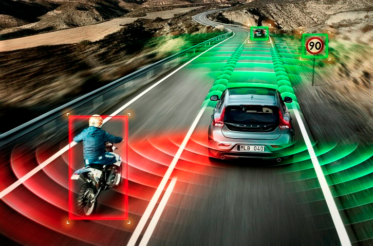
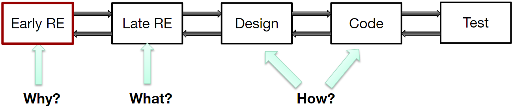
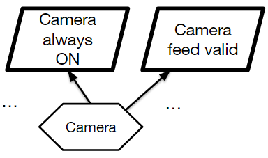
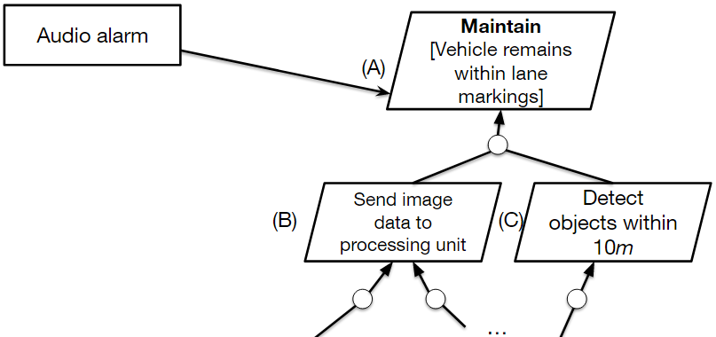
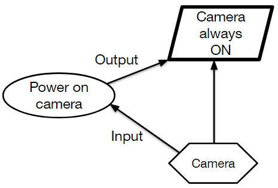
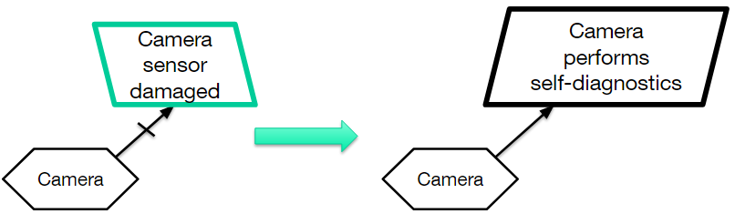
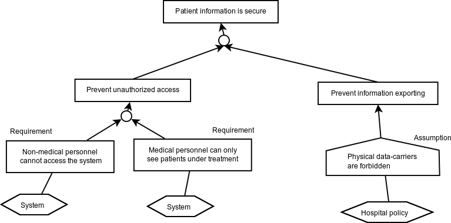

CSI4900/5900 Software Engineering for Cyber-Physical Systems Erik Fredericks (fredericks@oakland.edu) Fall 2019 KAOS Goal Modeling (Slides adapted from MSU CSE914) Introduction to KAOS Goal Modeling What is goal modeling? Goal modeling with KAOS Models at run time What is goal modeling? What is a goal? Representation of stakeholder objectives Who are the stakeholders? Anybody interested in system Developers, customers, maintainers, etc. What is a goal model? Hierarchical arrangement of goals Demonstrates relationships between goals What are goals? Examples of goals: Camera sensor must have 180 degree field of view Radar sensor is always on All sensors must provide reliable data Examples of non-goals: Camera software implemented in C Radar housing painted red Goal Hierarchy Goals can be decomposed from high-level objectives to low-level requirements Each goal refined with sub-goals that define how it can be satisfied Leaf-level goals are considered to be requirements / expectations Goal Hierarchy Running Example Autonomous vehicle Different types of sensors E.g., camera and radar Main objective: keep vehicle within lane  High-level vs. low-level goals Order these goals from high level to low level Camera sensor provides data to processing unit Vehicle must always stay within lane markings Camera sensor must always be ON Camera sensor detects objects within 10 meters High-level vs. low-level goals Order these goals from high level to low level Camera sensor provides data to processing unit (1) Vehicle must always stay within lane markings Camera sensor must always be ON Camera sensor detects objects within 10 meters High-level vs. low-level goals Order these goals from high level to low level (2) Camera sensor provides data to processing unit (1) Vehicle must always stay within lane markings Camera sensor must always be ON Camera sensor detects objects within 10 meters High-level vs. low-level goals Order these goals from high level to low level (2) Camera sensor provides data to processing unit (1) Vehicle must always stay within lane markings Camera sensor must always be ON (3) Camera sensor detects objects within 10 meters High-level vs. low-level goals Order these goals from high level to low level (2) Camera sensor provides data to processing unit (1) Vehicle must always stay within lane markings (4) Camera sensor must always be ON (3) Camera sensor detects objects within 10 meters High-level vs. low-level goals Order these goals from high level to low level Vehicle must always stay within lane markings Camera sensor provides data to processing unit Camera sensor detects objects within 10 meters Camera sensor must always be ON Types of goals Functional goals "Hard" goals Functions that system will perform Well-defined criteria for satisfaction E.g., vehicle always stays within lane markings Non-functional goals "Soft" goals Desired system qualities Hard to define and quantify Reliability Quality E.g., automatic stop is not jarring to passenger Types of goals Safety goals Ensure system consistently runs safely Does not endanger people or system itself E.g., sensor automatically shuts off if voltage exceeds maximum Failsafe goals Provide safe fallback state in case of error E.g., system shuts off if camera sensor is damaged Goal exercise Identify the goals in the following paragraph: Company X is designing a new autonomous vehicle. Their autonomous vehicle system comprises at least two sensors: a camera and a radar. Both the camera and radar are responsible for sensing objects at a minimum distance of 10 meters. These sensors can communicate to a CPU via a secure CAN bus, at which point the CPU parses the incoming data. For safety purposes, at least one sensor must be active at all times. Goal exercise Identify the goals in the following paragraph: Company X is designing a new autonomous vehicle. Their autonomous vehicle system comprises at least two sensors: a camera and a radar. Both the camera and radar are responsible for sensing objects at a minimum distance of 10 meters. These sensors can communicate to a CPU via a secure CAN bus, at which point the CPU parses the incoming data. For safety purposes, at least one sensor must be active at all times. Why do we use goal models? Provide rationale for requirements Identify stable information in system objectives Guide requirements elaboration / elicitation Provide visual depiction of relationships and dependencies between objectives When to use goal models Early in requirements engineering process Identify problems Explore solutions and alternatives Performed prior to UML modeling Continually refine goal model as new requirements or obstacles surface  Goal modeling with KAOS Different approaches exist for creating goal models KAOS, i*, UML (use cases) We will be using KAOS in this class for goal modeling KAOS notation Refine goals into requirements Objects in KAOS goal model Goal Agent Requirement / Expectation Refinements KAOS notation KAOS notation Goals KAOS notation Agent Agent can be human or sensor KAOS notation Requirement/expectatoin Requirement: Automated component responsible Expectation: Environment responsible KAOS notation KAOS notation Goal categories Invariant Must ALWAYS be satisfied Safety, failsafe, or system invariants E.g., vehicle can never collide with an obstacle Non-invariant Temporarily tolerates unsatisfied goal Transient conditions E.g., temporary sensor blockage / occlusion Goal examples Goal examples Avoid also considered invariant E.g., Avoid [Collision] Goal examples Goal examples Goal examples Goal examples All have been functional so far What about non-functional goals? Soft / fuzzy goals? Goal examples No difference between functional and non-functional goal in KAOS! Using models at run time Goal models can provide measure of system performance Is system satisfying its invariants? How well is system satisfying its non-invariants? Utility functions Derived mathematical function for each goal Provides degree of satisfaction for each goal Normalized on [0.0, 1.0] 0.0 ➔ goal is violated 1.0 ➔ goal is satisfied (0.0,1.0) ➔ goal is satisfied to some degree (i.e., "satisficed") Goal examples Invariants are typically boolean functions Goal (A) = 1.0 if vehicle has never crossed lane boundary Goal (A) = 0.0 otherwise Also, Goal (A) = 0.0 if (Goal (B) = 0.0) OR (Goal (C) = 0.0) Goal examples Non-invariants are typically real functions Goal (C)=1.0–∣distancedetected−distancemax∣distancemaxGoal~(C) = 1.0 – \frac{|distance_{detected}-distance_{max}|}{distance_{max}}Goal (C)=1.0–distancemax∣distancedetected−distancemax∣ Detected at 8m8m8m instead of 10m10m10m Goal (C)=1.0−∣8.0−10.0∣10.0Goal~(C) = 1.0 - \frac{|8.0 - 10.0|}{10.0}Goal (C)=1.0−10.0∣8.0−10.0∣ Goal (C)=0.8Goal~(C) = 0.8Goal (C)=0.8 What can we do with a utility value? Determine if an objective has been violated Or, determine if an objective is not being satisfied enough Refactor goal model Introduce a bugfix or patch Reconfigure system Assignment Part 1 Derive goal model based on requirements specification for your term project Must have at minimum: (2) Invariant goals (6) Non-invariant goals (3) System agents (2) AND- and (2) OR- refinements Other types of KAOS models Responsibility models Operation models Object models Obstacle models Responsibility models Describes: Agent Requirements/expectations agent is responsible for  Object models Objects can be entities within a goal model (that are not agents) Audio alarm if vehicle crosses lane marking  Operation models Describes behaviors agents need to fulfill the goals they are responsible for Requirements/expectations  Obstacle models Defines an obstacle to goal satisfaction Attempt to identify resolve obstacles in advance by refining goal model  Agents/Assumptions  foswiki MetaModel Respect-IT Assignment Part 2 For your original goal model: Define at least 2 utility functions to assess the satisfaction and/or satisficement of a goal Identify sources of uncertainty and how to account for them in your goal model? Define an obstacle model to complement your homework assignment Define (2) obstacles to the success of your goal model Provide a strategy for resolving each